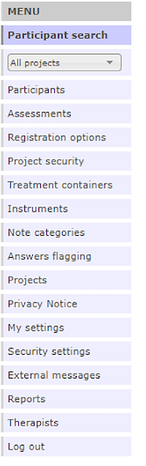

Chapter 4 The main menu
All functionality in the BASS administration interface can be accessed from the main menu to the left of your screen.
What options are visible in the main menu depends on what privileges have been assigned to your profile. A common setup is that one administrator manages the available instruments and assessments, while several therapists manage their own participants and individual treatments. The image below shows all available menu options, as presented to database administrators.

Participant Search lets you search on specific data points relevant to the participants registered in the active project. The Search tab will show what information is searchable. See Chapter 4 for further details.
The Project dropdown menu lets you choose what project to view. This governs which participants and what assessments you can access. Instruments and treatments are shared between projects. To switch projects, simply use the dropdown menu.
Participants lets you see an overview over all the participants registered in the active project. In this overview you can see if a participant is flagged, has sent messages or reported an error, among other information. See Chapter 6 for further details.
Assessments is only shown if you have selected a project from the Project dropdown menu. Here, you can view, create and edit assessments. See Chapter 5 for further details.
Registration options is only shown if you have selected a project. This view lets you define the parameters of the registration procedure built into BASS, should you elect to use it. You can define what information you want participants to submit, and write detailed information about your study or treatment to be presented. You can also opt to present consent forms during the registration process. See Chapter # for further details (under construction and will be updated).
Project security lets you define what security measures your project will use, such as two-factor authentication.
The Treatment containers view lets you view, create and edit treatments to be used within BASS. See Chapter 8 for further details.
The Instruments view lets you view, create, edit and delete instruments to be used within BASS. See Chapter 7 for further details.
Note categories lets you define custom note categories to be used to sort information on participants.
Answers flagging lets you set and define rules to flag specific answers or answer ranges in instruments that you want to quickly be notified about, should a participant give those answers.
The Projects lets your view and create projects within the database.
Privacy notice lets you view and edit the privacy notice(s) for the database and its projects. This is mandatory information in the EU that needs to be made available to all potential participants. If you use the built in registration procedure in BASS, this privacy notice is presented there.
My settings lets you view the settings of your therapist login.
Security settings lets you view and edit the security settings of the database, such as a general mailbox and expiry time for quick login codes. See Chapter # for further details (under construction and will be updated).
External messages lets you view and edit messages which can be sent automatically to the cell phones or e-mail adresses of participants. This is, for example, notifications and reminders about active assessments.
Reports lets you extract reports on data collected through instruments and assessments in BASS. See Chapter # for further details (under construction and will be updated).
Therapists lets you view, create and edit therapist logins in the database. See Chapter # for further details (under construction and will be updated).
Log out simply logs you out of the database and ends your current session.